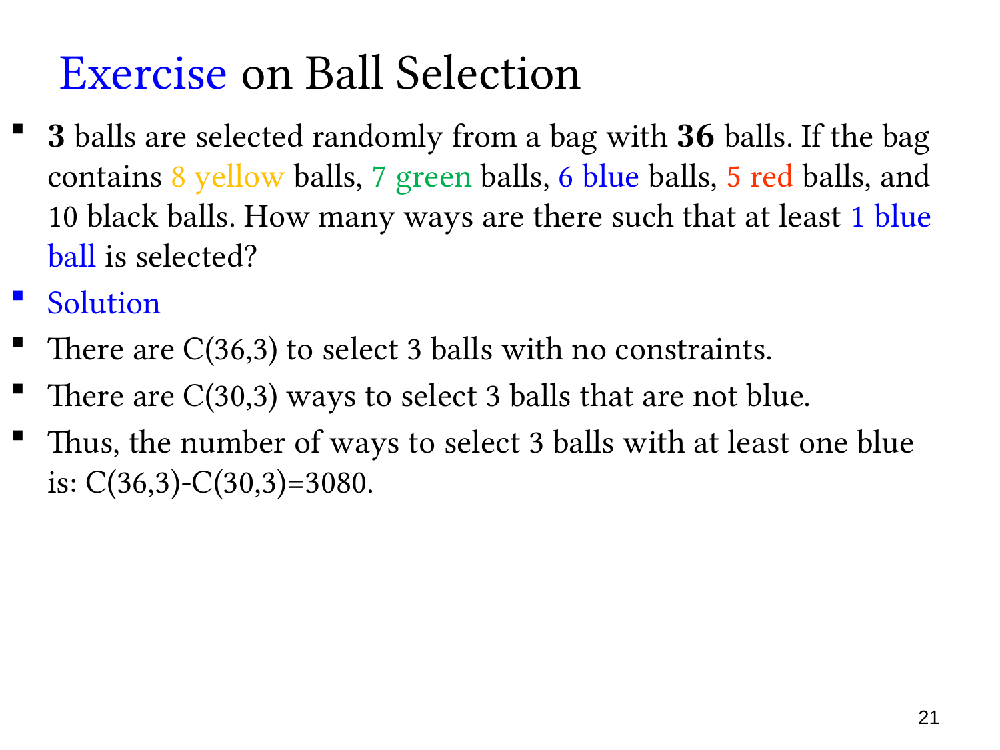

L1.6 · 第 21 页讲解原文
查看这一页课件

至少取到一个蓝球
袋中有 36 个球：8 黄、7 绿、6 蓝、5 红、10 黑。不放回地选三个，求至少有一个蓝球的选择数。
课件将每个球视为可以区分的个体，且不计抽取顺序。所有三球子集有 C(36,3) 个；非蓝球有 36−6=30 个，完全没有蓝球的选择有 C(30,3) 个。因此
C(36,3)−C(30,3)=7140−4060=3080.
颜色只用于判断限制，不能据此把同色球都合并成一个对象；若只数“颜色数量搭配”，就会是另一种问题。
也可按恰好取到 1、2、3 个蓝球分类：
C(6,1)C(30,2)+C(6,2)C(30,1)+C(6,3)=2610+450+20=3080.
补集法将三类合法情况一次性保留，通常更省步骤。
题目出现“随机”并不表示这里必须求概率；问的是选择方法数。若所有三球子集等可能，相应概率才是 3080/C(36,3)。